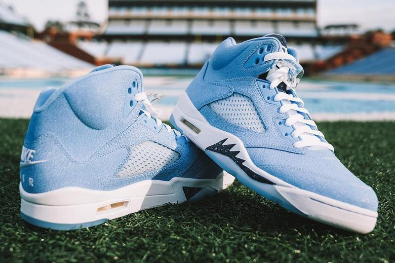

There has always been hype around the UNC Athletics program, especially for sports such as men’s basketball and football. This can all be attributed to one man--Michael Jordan. Jordan attended UNC as a member of the men’s basketball team from 1981-1984, choosing to forego his senior year and declare for the NBA Draft. After becoming perhaps the greatest basketball player of all time, MJ went on to dominate the shoe game, building a billion dollar shoe brand called Jordan. He has gone on to make special player edition (PE) sneakers for Carolina as well as other teams and players around the game of basketball, but he has especially taken care of his Tar Heel family. In 2018, UNC landed an extension with Nike valued at over $95 million dollars. It’s safe to say we’ll be seeing plenty more UNC exclusive footwear for hardwood fashion statements.
Coach's Corner
A feature of five of the most prolific Jordans Coach Williams wore in his final season of coaching the UNC Men’s Basketball Team (2020-2021). While Coach brought out a whole collection of his best kicks, these five shoes have a special meaning to them. It’s hard to order them, because they are all FIRE!
“UNC” AIR JORDAN 4s
Coach Williams wore this shoe in his final outing as the Heels fell to Wisconsin in the first round of the 2021 NCAA Tournament. The original Jordan IV was debuted by Michael Jordan in 1989 with the “Taking Flight” concept.
VIRGIL ABLOH’S UNIVERSITY BLUE OFF-WIHTE x AIR JORDAN 1s
Coach Williams broke the internet wearing this shoe at an early-season game. Fans and sneakerheads alike from around the world were shocked that he was sporting those kicks as they currently go for over $2,000 on resale websites.
“UNC” AIR JORDAN 11 LOWS
Coach Williams debuted this flavor of the low edition of the Jordan XI in the Maui Invitational Tournament. Fans were sure to comment on the argyle socks he rocked with them. Only Roy!
AIR JORDAN X CONVERSE PRO LEATHER PE
First worn by Michael Jordan in the UNC vs Georgetown 1982 national championship game, the Converse Pro Leather has transformed as years progressed. Coach sported this limited player edition sneakers as Converse put a special UNC touch on them to commemorate the three national championships won with Coach Williams as a coach.
AIR JORDAN 5 PE

For what matters most, Coach Williams wore this edition of the Jordan V as the Tar Heels beat the Duke Blue Devils for the second time of the season on Heels territory. It was senior night, and before leaving the floor, Coach went to center court and kneeled down, kissing the hardwood (and creasing the shoes). It was the perfect farewell from a legendary coach and an untouchable legacy. The original Jordan IV was debuted by Michael Jordan in 1989 with the “Taking Flight” concept.